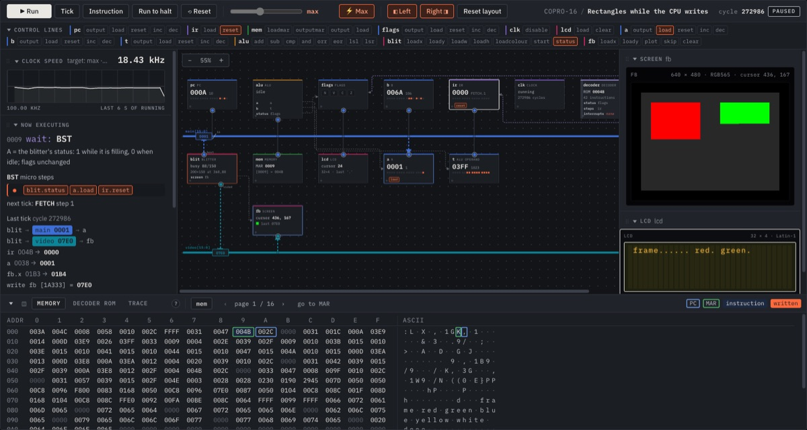

Explore microarchitectures
Build a computer, from the wires up, and watch it think.
ExµArch is a computer architecture playground in the browser. Design a machine from registers, memory and buses, write the microcode that drives it and the instruction set that microcode defines, then run programs on it one clock tick at a time.
It is made for a computer. ExµArch is a workbench: a schematic, editors and a run view side by side, worked with a keyboard and a mouse. On a phone screen there is no room for it. Open it on a laptop or desktop at
www.exuarch.com

What you can do
- Design the hardware. Place registers, an ALU, memory, displays, a keypad, timers, interrupts, a blitter and a triangle rasterizer on buses, and wire them together.
- Write the microcode. Each instruction is a few steps of control lines, such as
pc.outputandmem.loadmar, and steps can depend on the flags. - Program it. Write assembly for the instruction set you just made.
- Run it. Step one tick at a time or run at full speed, with the buses, every device, memory and a trace on screen.
Fourteen machines to start from
From TINY-16 with one register, through a classic accumulator CPU, a stack machine, a RISC, a DSP drawing the Mandelbrot set, a CISC with six addressing modes and a Harvard machine, to a CPU with interrupts and a small 3D GPU drawing a spinning cube. And WORM-16, a kind of computer that does not exist anywhere else: it has no jumps, and its program crawls round its memory, deciding instruction by instruction what lives on.
No black boxes
The tutorials start at ground zero, with an empty decoder ROM and a counter, and build a working computer one step at a time. Everything the machine does is a value on a bus or a control line you can see, and the handbook says plainly where the simulator is simpler than real electronics.
Nothing to install
No account and no download: it is free, it runs entirely in your computer's browser, and your machines and programs stay in it.
Want a look anyway? Open ExµArch here. It is a large download and hard to use on a small screen.